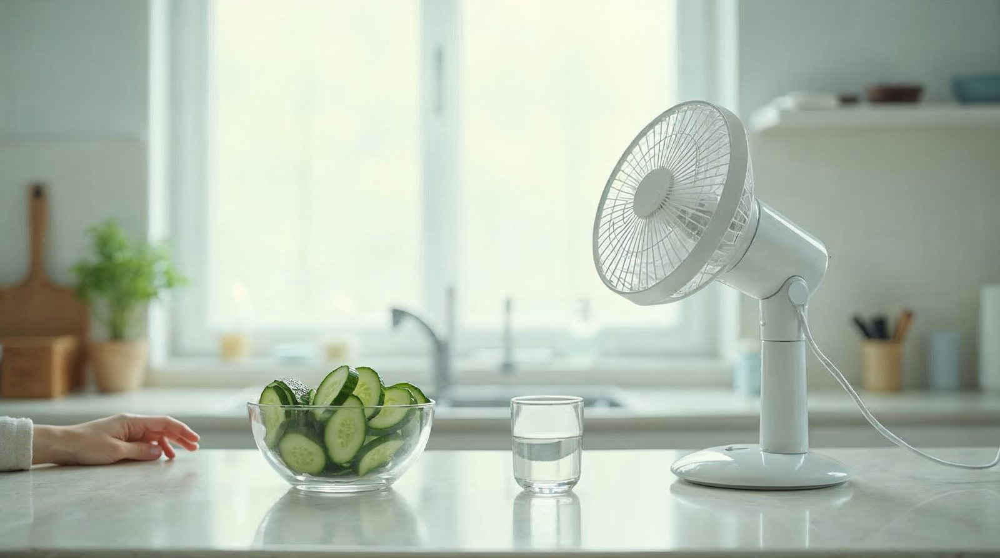
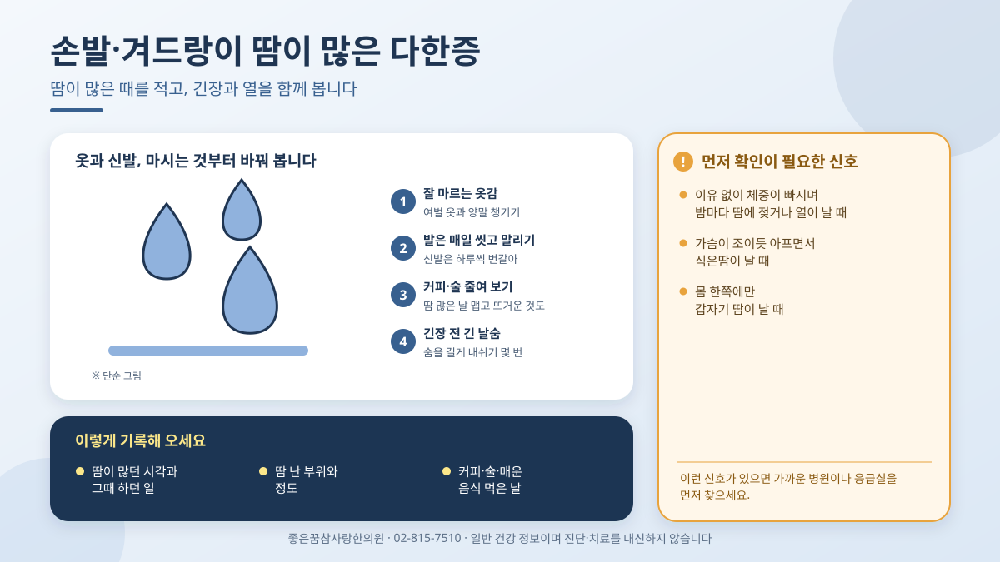

이종호 한의사 감수좋은꿈참사랑한의원 대표원장 (한의사 면허번호 19769)발행 2026-11-26 · 수정 2026-11-26
이 글의 차례
중요한 계약서에 서명하려는데 손바닥에서 땀이 배어 종이가 울어 버립니다. 악수를 청하는 손을 보면 바지에 손을 한 번 쓱 닦고 나서야 내밀게 됩니다. 시험지를 넘기다 번진 글씨를 보며 한숨을 쉬었던 기억이 있는 분도 계시지요.
다한증은 몸의 온도를 맞추는 데 필요한 것보다 땀이 훨씬 많이 나서 생활이 불편해지는 상태를 말합니다. 손바닥, 발바닥, 겨드랑이, 얼굴과 머리처럼 일부에만 많이 나는 경우가 흔하고, 온몸에 땀이 많아지는 경우도 있습니다.
땀은 원래 몸을 지키는 고마운 장치입니다. 다만 그 장치가 조금 예민하게 켜져 있으면 날씨와 상관없이, 긴장한 순간마다 땀이 쏟아집니다. 저는 땀을 막는 것만 생각하기보다, 언제 어디에 어떻게 나는지를 먼저 나눠 보고 몸의 리듬과 함께 살피는 쪽을 권합니다.
진료실에서 이런 말씀을 자주 듣습니다. "남들은 별것 아니라는데, 저는 매일이 신경 쓰여요." 땀은 아프지 않으니 대수롭지 않게 여겨지기 쉽습니다. 그러나 손을 잡는 일, 종이를 만지는 일, 신발을 벗는 일이 매번 마음에 걸린다면 그것은 분명히 생활의 무게입니다.
여름이 다가오면 옷 색깔부터 고르게 되고, 회색 셔츠는 아예 입지 않게 됐다는 분도 계십니다. 그런 작은 포기들이 쌓여 온 시간을 생각하면, 그동안 얼마나 신경 쓰며 지내셨을까 싶습니다.
왜 땀이 이렇게 많이 날까요
땀은 자율신경, 그중에서도 몸을 긴장시키고 깨우는 쪽 신경의 지시를 받아 납니다. 더울 때는 체온을 내리려고, 긴장할 때는 몸이 싸울 준비를 하느라 땀샘이 움직입니다. 그래서 운동하지 않아도 긴장한 순간 손바닥이 축축해집니다.
일부에만 땀이 많은 다한증은 이 신호가 손바닥, 발바닥, 겨드랑이 같은 곳에 유난히 크게 전해지는 상태로 알려져 있습니다. 어릴 때나 사춘기 무렵 시작되는 경우가 많고, 가족 중에 비슷한 분이 있는 경우도 흔합니다. 양쪽이 비슷하게 나고, 잠들어 있는 동안에는 거의 나지 않는다는 것이 특징입니다.
반면 어른이 된 뒤 갑자기 온몸에 땀이 많아졌다면 다른 원인을 함께 살펴야 합니다. 갑상선 기능이 높아졌거나, 혈당이 흔들리거나, 감염이 있거나, 새로 먹기 시작한 약의 영향일 수도 있고, 갱년기의 열감처럼 몸의 변화가 함께 있는 경우도 있습니다.
한의학에서는 오래전부터 땀을 자세히 나누어 보아 왔습니다. 낮에 조금만 움직여도 나는 땀, 잘 때 나는 땀, 머리에만 나는 땀, 손발에만 나는 땀을 각각 다르게 보고, 그 바탕의 열과 기운, 긴장을 함께 살폈지요. 저도 땀의 양보다 땀의 모양을 먼저 여쭙는 편입니다.
땀이 나는 모양을 이렇게 나눠 봅니다
손바닥·발바닥
긴장하거나 집중할 때 손바닥이 흥건해지고, 발에 땀이 차서 양말이 젖거나 신발 속에서 미끄러지는 경우입니다. 발에 땀이 많으면 발 냄새와 무좀이 함께 신경 쓰이기도 합니다. 겨울에도 손발은 차면서 축축하다는 분이 많습니다.
겨드랑이
셔츠 겨드랑이 쪽이 동그랗게 젖어 옷 고르기가 어렵다는 분들입니다. 더운 날만이 아니라 회의나 발표처럼 긴장하는 자리에서 확 늘어납니다. 땀 냄새가 걱정되어 사람과 가까이 서기를 피하게 되기도 합니다.
얼굴과 머리
밥을 먹을 때, 특히 맵거나 뜨거운 음식을 먹을 때 이마와 머리에서 땀이 흘러내린다는 분들이 있습니다. 긴장할 때 얼굴이 달아오르며 땀이 함께 나기도 합니다. 얼굴이 화끈 달아오르는 열감과 함께라면 갱년기 변화나 몸의 열을 함께 살펴봅니다.
온몸
특별히 덥지 않은데도 온몸이 땀에 젖거나, 밤마다 잠옷이 젖어 깨는 경우입니다. 이때는 일부 다한증과는 다른 이야기일 수 있어, 체중 변화나 열, 두근거림이 함께 있는지를 꼭 여쭙니다.
땀과 긴장은 서로를 부릅니다
손에 땀이 날까 봐 신경 쓰면 그 긴장 때문에 땀이 더 나고, 땀이 나면 더 긴장하게 됩니다. 다한증이 있는 분들이 가장 힘들어하시는 부분이 바로 이 고리입니다. 악수할 일이 생길 것 같은 자리에 가기 전부터 이미 손이 젖기 시작한다고 말씀하시는 분도 계십니다.
그래서 저는 땀 이야기를 할 때 마음 이야기를 빼놓지 않습니다. 땀이 생기는 이유가 마음 때문이라는 뜻이 아니라, 땀과 긴장이 서로를 키우는 고리를 조금이라도 느슨하게 할 방법을 함께 찾자는 뜻입니다.
긴장하는 순간 숨을 길게 내쉬는 연습, 손수건이나 땀을 닦을 것을 미리 챙겨 두는 작은 준비만으로도 마음이 한결 가벼워진다는 분들이 많습니다. 준비가 되어 있다는 느낌이 긴장을 덜어 주기 때문입니다.
계절마다 땀의 모양이 달라집니다
여름에는 누구나 땀이 늘어나니 다한증이 있는 분은 더 힘듭니다. 겨드랑이와 등, 발이 하루 종일 젖어 있고, 땀띠나 무좀 같은 피부 문제도 함께 따라오기 쉽습니다. 이 시기에는 옷을 자주 갈아입고 피부를 말려 주는 데 마음을 씁니다.
겨울에는 오히려 손발이 차가운데 축축하다는 분이 많습니다. 찬 손으로 땀이 나니 손끝이 더 시리고, 장갑 속이 젖어 불편합니다. 실내외 온도 차가 큰 날에는 들어오자마자 얼굴과 등에 땀이 확 나기도 합니다.
그래서 저는 "언제가 가장 힘드세요?"라고 여쭙고, 그 계절이 오기 전에 미리 준비할 것을 함께 정합니다. 여름 앞에는 옷감과 여벌을, 겨울 앞에는 손발을 따뜻하고 보송하게 두는 방법을 이야기합니다.
어릴 때부터 땀이 많았던 분께
오래 땀과 함께 지낸 분들은 이미 나름의 방법을 많이 갖고 계십니다. 주머니 속 손수건, 늘 들고 다니는 여벌 양말, 일부러 고른 짙은 색 옷 같은 것들입니다. 그 방법들은 그동안 스스로를 지켜 온 지혜라서, 저는 먼저 그 이야기부터 듣습니다.
그 위에 무엇을 더할 수 있을지, 혹은 무엇을 조금 내려놓아도 될지를 함께 찾습니다. 땀을 숨기느라 쓰던 힘이 조금 줄어들면, 그만큼 하루가 가벼워질 수 있습니다.
예를 들면 이런 경우입니다
실제 어느 분의 사연이 아니라, 진료실에서 자주 보는 모습을 바탕으로 그려 본 장면입니다.
예를 들어 필기 시험을 준비하는 수험생이 시험지가 젖을까 봐 걱정한다면, 손수건과 얇은 면장갑처럼 시험장 규정에 맞는 준비물부터 함께 생각합니다. 그리고 시험 기간 잠과 카페인 양을 같이 살펴봅니다.
사람을 많이 만나는 일을 하는 분이 겨드랑이 땀 때문에 옷 고르기가 힘들다면, 땀이 덜 드러나는 옷감과 색, 갈아입을 여벌 셔츠 같은 현실적인 방법을 먼저 정합니다. 피부과에서 쓸 수 있는 방법이 있는지도 상담해 보시도록 안내합니다.
밥만 먹으면 이마에서 땀이 줄줄 흐른다는 분이라면, 식사 속도와 음식의 온도, 매운 정도를 함께 봅니다. 식사 뒤 속이 더부룩하고 얼굴이 달아오르는지도 같이 여쭙습니다.
먼저 이렇게 여쭙니다
땀으로 오시면 대략 이런 순서로 여쭙니다.
- 어디에 땀이 가장 많고, 언제부터 그랬나요?
- 양쪽이 비슷하게 나나요, 한쪽에만 나나요?
- 잘 때도 땀이 나나요? 밤에 땀에 젖어 깨신 적이 있나요?
- 긴장할 때, 더울 때, 식사할 때 가운데 언제 가장 심한가요?
- 체중 변화, 두근거림, 열, 손 떨림 같은 다른 변화가 있나요?
- 드시는 약이나 영양제, 커피·술의 양은 어떤가요?
가족 중에 땀이 많은 분이 계신지도 알려 주세요. 오래된 체질의 이야기인지, 최근에 새로 생긴 변화인지를 나누는 데 도움이 됩니다.

일상에서 먼저 해 볼 수 있는 것
땀을 완전히 멈추게 하는 생활 요령은 없지만, 땀 때문에 생기는 불편을 줄이는 방법은 여러 가지가 있습니다. 아래에서 두세 가지를 골라 보세요.
- 땀이 잘 마르는 면이나 기능성 옷감을 고르고, 여벌 옷이나 양말 챙기기
- 겨드랑이 땀이 걱정되면 땀이 덜 드러나는 짙은 색이나 무늬 있는 옷 고르기
- 발은 매일 씻어 발가락 사이까지 말리고, 신발은 하루씩 번갈아 신기
- 커피·에너지 음료·술과 아주 맵고 뜨거운 음식은 땀이 많은 날 줄여 보기
- 긴장되는 자리 전에는 숨을 길게 내쉬는 호흡을 몇 번 해 보기
- 실내 온도를 너무 높이지 않고, 잠자리는 시원하게 두기
땀 억제제를 써 보고 싶다면 피부과에서 피부에 맞는 것을 상의해 보세요. 처음 쓸 때 따끔거리거나 붉어지는 분도 있어서, 쓰는 방법을 안내받고 시작하시는 편이 좋습니다.
손에 땀이 많은 분은 손을 자주 씻으면서 피부가 갈라지기도 합니다. 씻은 뒤에는 순한 보습제를 얇게 발라 주세요. 축축함과 건조함이 번갈아 오면 손 피부가 더 예민해지기 쉽습니다.
피부과 진료와 함께 가는 법
피부과에서는 땀의 부위와 정도에 따라 바르는 땀 억제제, 전기를 이용하는 이온영동 치료, 주사 치료 같은 방법을 상의하는 경우가 많습니다. 범위가 넓거나 생활이 크게 불편한 경우 다른 방법을 이야기하기도 합니다. 어떤 방법이 맞는지는 피부과에서 직접 상담하시는 것이 정확합니다.
한의원에서는 그와 함께 잠과 긴장, 몸의 열감과 소화 같은 몸 전체의 리듬을 살핍니다. 두 곳의 역할이 나뉘어 있으면 겹치지 않고, 서로의 이야기를 들고 오시면 더 맞춰 볼 수 있습니다.
잠자리도 한번 살펴보세요. 두꺼운 이불과 높은 실내 온도는 밤사이 몸을 데워 다음 날 아침까지 땀을 이어지게 할 수 있습니다. 이불은 한 겹 가볍게, 잠옷은 땀이 잘 마르는 것으로 바꿔 보시길 권합니다.
한의원에서 함께 살필 수 있는 경우
- 긴장하는 자리마다 땀이 쏟아지고, 그 때문에 마음이 더 위축되는 경우
- 땀과 함께 가슴 두근거림, 얕은 잠, 쉽게 지치는 느낌이 있는 경우
- 몸에 열이 오르는 느낌이나 얼굴 달아오름이 땀과 같이 오는 경우
- 손발은 차면서 땀이 많고 소화가 약한 경우
좋은꿈참사랑한의원에 처음 오시면 아래 '먼저 확인이 필요한' 신호가 없는지부터 봅니다. 그다음 양손을 올려 달라고 말씀드리고 맥을 짚으며 잠과 소화, 체온, 대소변, 땀이 나는 모양을 자세히 여쭙니다. 손에 땀이 많아 진맥이 신경 쓰이신다면 걱정하지 않으셔도 됩니다. 땀도 진찰의 한 부분입니다.
진찰을 마치면 상태에 맞춰 침 치료나 한약 상담이 필요한지 함께 정합니다. 한약을 상의할 때는 드시는 약을 확인하며 신중하게 정합니다. 갑상선이나 혈당처럼 검사로 확인할 부분은 내과에서, 땀 억제제와 주사 같은 치료는 피부과에서 상의하시도록 안내합니다.
다시 오시면 땀이 많았던 날과 덜했던 날이 어떻게 달랐는지, 생활에서 바꿔 본 것이 어땠는지부터 이어서 듣습니다. 계절에 따라 땀의 모양이 바뀌니 몇 달에 걸쳐 함께 보아 가려 합니다.
땀이 많은 것을 부끄럽게 여기실 필요는 없습니다. 많은 분이 비슷한 고민을 안고 지내지만 말하지 않을 뿐입니다. 진료실에서는 땀 이야기를 편하게 꺼내셔도 됩니다. 어디에 얼마나 나는지 솔직하게 들려주실수록 함께 찾을 수 있는 방법도 늘어납니다.
이렇게 기록해 오시면 상담이 쉬워집니다
2주 정도만 한 줄씩 적어 보세요.
- 땀이 유독 많았던 날과 시각, 그때 무엇을 하고 있었는지
- 땀이 난 부위와 정도(조금 축축함, 흘러내림, 옷이 젖음)
- 잠잘 때 땀에 젖어 깬 날이 있었는지
- 커피·술을 마신 날, 맵거나 뜨거운 음식을 먹은 날
- 긴장되는 일정이 있던 날
- 체중 변화가 있다면 일주일에 한 번 잰 체중
기록하다 보면 "생각보다 커피 마신 날 더 심하네요" 하고 스스로 찾아내시는 경우가 많습니다. 그 작은 발견이 다음 걸음이 됩니다.
땀 때문에 내밀지 못했던 손, 벗지 못했던 신발을 생각하면 그동안 마음이 참 무거우셨겠다 싶습니다. 땀을 탓하기보다 땀이 많은 몸과 조금 더 편하게 지내는 방법을 같이 찾아보겠습니다. 다음에 오시면 땀이 가장 많았던 날 무슨 일이 있었는지부터 여쭙겠습니다.
이런 증상은 먼저 확인이 필요합니다
- 이유 없이 체중이 빠지면서 밤마다 땀에 젖거나 열이 나는 경우
- 가슴이 조이듯 아프면서 식은땀이 나거나, 몸 한쪽에만 갑자기 땀이 나는 경우
이런 신호가 있으면 한의원보다 가까운 병원이나 응급실을 먼저 찾으세요.
함께 읽으면 좋은 글
- 땀이 많거나 적다고 하면 진료실에서 무엇을 묻나요?
- 얼굴이 달아오르고 땀이 갑자기 날 때는 어떤 점을 살펴보나요?
- 가슴이 두근거리고 불안할 때는 어떤 점을 먼저 확인하나요?
- 여름에 땀이 차는 곳마다 붉은 좁쌀 같은 것이 올라올 때는 어떻게 살피나요?

여쭙는 것
- 어디에 땀이 가장 많고, 언제부터 그랬나요?
- 양쪽이 비슷하게 나나요, 한쪽에만 나나요?
- 잘 때도 땀이 나나요? 밤에 땀에 젖어 깨신 적이 있나요?
생활에서 해 볼 것
- 땀이 잘 마르는 면이나 기능성 옷감을 고르고, 여벌 옷이나 양말 챙기기
- 겨드랑이 땀이 걱정되면 땀이 덜 드러나는 짙은 색이나 무늬 있는 옷 고르기
- 발은 매일 씻어 발가락 사이까지 말리고, 신발은 하루씩 번갈아 신기
한의원에서 함께 살필 것
- 긴장하는 자리마다 땀이 쏟아지고, 그 때문에 마음이 더 위축되는 경우
- 땀과 함께 가슴 두근거림, 얕은 잠, 쉽게 지치는 느낌이 있는 경우
- 몸에 열이 오르는 느낌이나 얼굴 달아오름이 땀과 같이 오는 경우
먼저 확인이 필요한 신호
- 이유 없이 체중이 빠지면서 밤마다 땀에 젖거나 열이 나는 경우
- 가슴이 조이듯 아프면서 식은땀이 나거나, 몸 한쪽에만 갑자기 땀이 나는 경우
한눈에 보는 표
| 구분 | 핵심 |
|---|---|
| 여쭙는 것 | 어디에 땀이 가장 많고, 언제부터 그랬나요? 양쪽이 비슷하게 나나요, 한쪽에만 나나요? |
| 생활에서 해 볼 것 | 땀이 잘 마르는 면이나 기능성 옷감을 고르고, 여벌 옷이나 양말 챙기기 겨드랑이 땀이 걱정되면 땀이 덜 드러나는 짙은 색이나 무늬 있는 옷 고르기 |
| 한의원에서 함께 살필 것 | 긴장하는 자리마다 땀이 쏟아지고, 그 때문에 마음이 더 위축되는 경우 땀과 함께 가슴 두근거림, 얕은 잠, 쉽게 지치는 느낌이 있는 경우 |
| 먼저 확인이 필요한 신호 | 이유 없이 체중이 빠지면서 밤마다 땀에 젖거나 열이 나는 경우 가슴이 조이듯 아프면서 식은땀이 나거나, 몸 한쪽에만 갑자기 땀이 나는 경우 |
자주 묻는 질문
다한증은 체질이라 어쩔 수 없나요?
일부에 땀이 많은 다한증은 가족 중에 비슷한 분이 있는 경우가 흔합니다. 그렇다고 손 놓고 지내실 필요는 없습니다. 생활 속 불편을 줄이는 방법과 피부과 치료, 몸의 리듬을 살피는 진료를 함께 상의해 볼 수 있습니다.
피부과 치료를 받고 있는데 한의원 진료를 같이 받아도 되나요?
네. 받고 계신 치료와 쓰는 약을 알려 주시면 확인한 뒤 상담합니다. 피부과 치료는 그대로 이어 가시도록 안내합니다.
땀이 많으면 물을 덜 마셔야 하나요?
물을 줄인다고 땀이 줄지는 않고, 오히려 몸이 지치기 쉽습니다. 땀으로 잃은 물은 조금씩 자주 채워 주시는 편이 좋습니다.
손에 땀이 많아 진맥받기가 민망해요.
걱정하지 않으셔도 됩니다. 손의 땀도 몸의 상태를 알려 주는 진찰의 한 부분이라, 오히려 그 모습을 함께 살펴봅니다.
주말에도 진료하나요?
평일은 09:30~20:00(점심 13:00~14:00), 토·일·공휴일은 09:30~15:00(점심시간 없음)에 진료합니다. 방문 전 전화(02-815-7510)로 확인해 주세요.
좋은꿈참사랑한의원은 재진 때 지난번 이야기부터 이어서 여쭙니다. 진료시간과 예약은 오시는 길에서 확인하세요.
어디서 상담받을 수 있나요?
좋은꿈참사랑한의원은 서울 동작구 만양로2길 2 신성빌딩 3층·5층(서울 동작구 상도동, 7호선 상도역 3번 출구 근처)에 있습니다. 한의사 3명(이종호 대표원장, 조영기 수석진료원장, 정원영 진료원장)이 진료합니다. 진료시간은 평일 09:30~20:00(점심 13:00~14:00), 토·일·공휴일 09:30~15:00이며, 방문 전 전화로 확인을 권합니다. 예약은 네이버 예약, 카카오톡 상담, 전화 02-815-7510로 받습니다.
이 글은 일반적인 건강 정보이며 개인의 진단이나 치료를 대신하지 않습니다. 증상이 있거나 복용 중인 약이 있다면 진료를 통해 확인하세요. 치료 효과는 개인마다 다를 수 있습니다.
작성 기준: 일반적으로 알려져 있는 건강 정보를 참고해 정리했습니다(대표원장 감수). 증상 기록은 1~2주 동안 하루 1회, 비슷한 시간에 적어 오시면 지난 상태와 비교하기 쉽습니다.